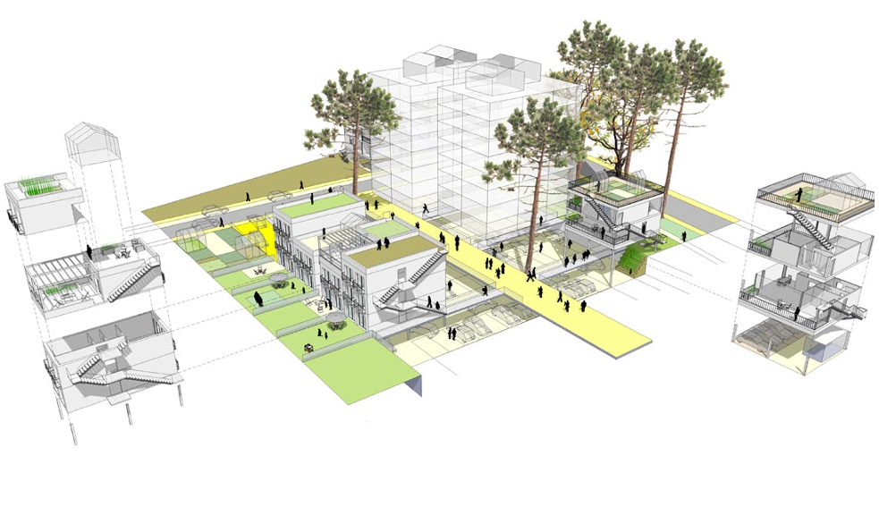

Survolez l'image et agrandissez/réduisez la vue à l'aide de la molette.
Budget: sans objet
Surface:55'000 ha
Date début: 2010
Date fin: 2012
Maîtrise d'ouvrage: CUB
Co-traitant(s): Alexandre Chemetoff & associés
Description:
La grande ville, dans sa diversité même, est un lieu de ressource. L’agglomération bordelaise, soit un millième de la surface de la France pour un centième de la population du pays, est riche de nuances géographiques particulières. L’objectif du million d’habitants d’ici 2025 risque d’entraîner une perte d’identité des territoires communautaires. Comment tirer avantage de ses qualités pour qu’elles soient partagées par un plus grand nombre ? Le terme “situations construites” désigne à la fois notre démarche, notre prise de position et nos propositions à la mesure de cet enjeu métropolitain.
Chacun d’entre nous habite en ville d’une manière différente. On n’habite pas seulement un logement de type T1, T2 ou T3, mais un lieu, la possibilité d’être nombreux à certains moments, seul à d’autres, de travailler chez soi ; on habite une qualité de lumière, un rapport avec un environnement proche et lointain, un jardin, un cabanon, le chemin qui mène à sa maison, la lisière d’un bois, la proximité d’une station de transports en commun, de commerces, un horizon. Chacun doit pouvoir transformer son cadre de vie, en construisant une pièce en plus, en doublant la surface initiale de l’appartement ou encore en imaginant, au fil du temps, un habitat évolutif. Dans l’agglomération bordelaise, des situations construites offrent la liberté de vivre que certains vont chercher plus loin, là où les règles sont moins strictes et les prix plus abordables.
Faut-il redouter que cette appropriation fabrique une ville hétérogène et diverse ?
Au contraire, nous imaginons un lieu de vie à son goût et selon ses moyens.
{kind=link}
{kind=link}
{kind=link}